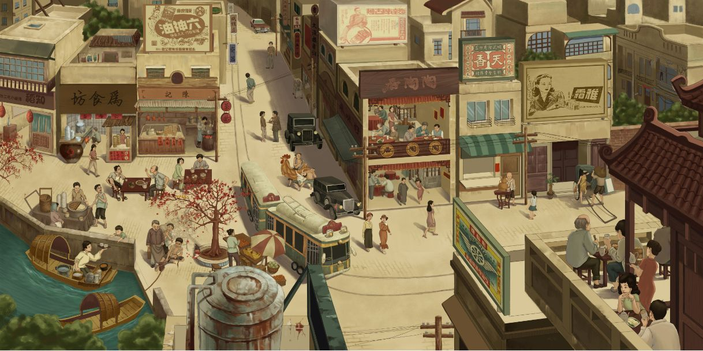
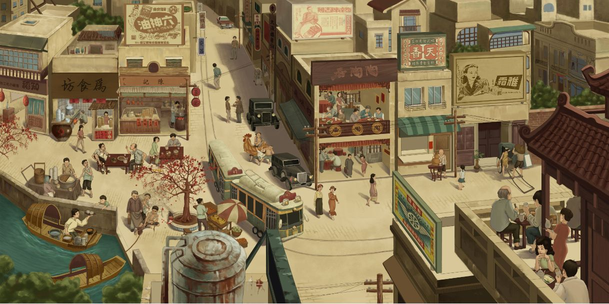

说起广东早茶的来源，要追溯到咸丰同治年间。当时广州有一种名为“一厘馆”的馆子，门口挂着写有“茶话”二字的木牌，供应茶水糕点，设施简陋，仅以几把木桌木凳迎客，聊供路人歇脚谈话。后来出现了茶居，规模渐大，变成茶楼，此后广东人上茶楼喝早茶蔚然成风。直到今天，广东早茶中茶水已经成为配角，茶点却愈发精致多样，这种传统文化随着广东经济的迅速发展不但没有消失的迹象，反而越来越成为广东人休闲生活中一道亮丽的风景线。
还有一种叫“二厘馆”也供同样的点心，区别在于价格和设备，茶楼的茶资要三分六厘，而二厘馆的茶资只需要二厘，相差甚远，足足十六倍。老式茶楼有些分等级，楼上比楼下的贵，因楼上有空调（或电风扇）而且地方较宽敞之故。既名为“早茶”，茶水便自然是广东早茶中不可缺少的一部分。早茶的茶水以红茶为主，取其暖胃去腻，利于消化。常见的有发酵茶（安化黑茶、普洱茶等）、乌龙茶（铁观音、大红袍等），有的人也喜欢喝菊普茶，即在普洱茶中加入菊花，取其清凉祛火。红茶色深红，汤浓稠，味苦涩，虽在视觉和味觉上都不如绿茶，却与广东早茶中味道浓郁的茶点恰是绝佳配搭。
广东早茶的长盛不衰，与广东自古以来贸易兴盛，经济发展迅速是分不开的。在广东，早茶时分可以倾谈生意、交换信息，也可以会朋聚友、谈天说地。生意人把茶楼当作商谈重地，普通人则在此抒解压力，换得浮生半日闲。旧时广州的“妙奇香”茶楼有一副对联：
“为名忙，为利忙，忙里偷闲，饮杯茶去；
劳心苦，劳力苦，苦中作乐，拿壶酒来。”
而广州著名的茶楼“陶陶居”三楼也有一副对联写道：
“陶潜善饮，易牙善烹，恰相逢作座中君子；
陶侃惜飞，夏禹惜寸，最可惜是杯里光阴。”
想来应是绝大部分广东人喝早茶时的心理写照吧。